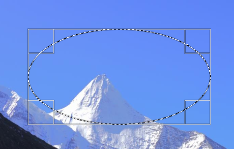

椭圆选择工具
快捷键：E
椭圆选择工具及其工具选项
椭圆选择工具(  )可以在图像中画一个椭圆形或圆形的选择区域。
)可以在图像中画一个椭圆形或圆形的选择区域。
我们选中 椭圆选择工具 后，在图像上点击并拖动鼠标就可以创建的一个椭圆选区(大小合适后就松开鼠标)：
创建好的椭圆选区(蚂蚁线)
上面的截图中：
黑白虚线(也叫蚂蚁线)框是选区边框，就是创建的椭圆选区；
椭圆选区的矩形框是控制框，四个角显示了四个控制手柄；
四个边的控制手柄，只有在鼠标位置移动到相应的的矩形实线框范围内时才会显示出来，且同一时间只能显示一个；
四个角处的控制手柄，每一个都可以同时调整矩形控制框的两个边；
四个边的控制手柄，每一个只能调整矩形控制框的一个边；
通常情况下，创建椭圆选区分两个步骤：
创建椭圆选区；
调整椭圆选区；
如果您只是随意画一个椭圆选区来测试一下，那么，第二个步骤完全不需要；
如果您需要精确控制椭圆选区的尺寸和位置，那么，通常两个步骤都需要；(如果您了解工具选项，那么可能只需要第一个步骤)
要精确调整已经创建的椭圆选区，您可以把图像放大(可以放大到像素级)，这样就可以进行细微操作，精确调整椭圆选区；
创建好的椭圆选区，在没有进行其它操作前，随时都可以进行精确调整，不受限制；
辅助快捷键
创建椭圆选区时，可以使用 Ctrl、Shift、Alt 这三个快捷键来辅助操作，来实现一些功能：
创建椭圆选区的过程中(已经画了一部分，但未画完)按下Ctrl键，可以让椭圆以鼠标点击的位置为中心向外扩展；
创建椭圆选区的过程中(已经画了一部分，但未画完)按下Ctrl+Shift键，可以让椭圆以鼠标点击的位置为中心向外扩展，且保持为正圆形；(需要工具选项中设置固定宽高比 1:1)
创建椭圆选区的过程中(已经画了一部分，但未画完)按下Shift键，可以让椭圆保持为正圆形；(需要工具选项中设置固定宽高比 1:1)
创建椭圆选区之前如果按住Ctrl键，表示要从已经存在的选区中减去要创建的椭圆选区；此操作需要已经有选区存在，如果没有选区存在，按Ctrl键画椭圆选区时会报错；
创建椭圆选区之前如果按住Shift键，表示要从已经存在的选区中加上要创建的椭圆选区；此操作不需要已经有选区存在；
创建好椭圆选区后，按下Alt键并点击椭圆选区内部，可以移动椭圆选区；
提示
如果只想描绘一个椭圆的轮廓，那么可以在创建好一个椭圆选区后，点击菜单 选择→边界。
(如果想把选区保存起来供以后使用，请参考工具箱→矩形选择工具→保存选区提示)
工具选项
这里提供了更多的细节控制。
(没找到工具选项？请参考工具箱→矩形选择工具→如何显示工具选项)
模式：模式会决定新创建的选区与已经存在的选区如何组合，有四个选项：
替换：已经存在的选区会被删除，只保留新创建的选区。
合并：新创建的选区和已经存在的选区相加，相当于并集。
减去：从已经存在的选区减去新创建的选区，相当于差集。
相交：保留新创建的选区和已经存在的选区的重合部分，未重合部分全部删除，相当于交集。
抗锯齿：使选区的边缘更平滑(通常对弧线或斜线有效)。
羽化边缘：可以融合边缘，使选区与背景过度更平滑。默认半径为10像素。
从中心扩展：勾选后，鼠标点击的位置会成为选区的中心点，选区从中心向外扩散。
固定：几种限制椭圆形状的方法：
宽高比：让椭圆的控制矩形的宽高比保持固定比例，比例值在下面的数值框内，默认是1:1(正圆形)。数值框右侧有两个小图标，可以反转比例。
宽度：固定椭圆的控制矩形的宽度，宽度值在下面的数值框内，默认是0。
高度：固定椭圆的控制矩形的高度，高度值在下面的数值框内，默认是0。
大小：固定椭圆的控制矩形的尺寸，数值在下面的数值框内，默认值是100x100。
位置：椭圆的控制矩形的左上角的横坐标和纵坐标，修改这两个值可以精确地调整椭圆的位置。默认单位是像素，可以改为其它单位。
大小：椭圆的的控制矩形的宽度值和高度值，修改这两个值可以精确地调整椭圆的尺寸。默认单位是像素，可以改为其它单位。
高亮：勾选后，椭圆区域外会变暗(类似蒙版)，视觉效果上更方便。不透明度滑块可以调整椭圆区域外变暗的程度。
参考线：在选区中显示的参考线类型，即创建选区的同时在选区内显示参考线。
无参考线：不使用参考线。
中间线：一条垂直中心线和一条水平中心线，相互交叉。
三分构图法：添加两条等距水平线和两条等距垂直线，将变换区域横向和纵向都三等分，整个图像九等分。
五分构图法：与 三分构图法 类似，但横向和纵向都五等分，整个图像25等分。
黄金分割：数学上又称黄金比例(0.618)，面积分成九份，各份与被变换的面积成黄金比例。
对角线：用45度对角线划分变换区域。
自动收缩：点击此按钮，选区会自动收缩到最接近选区内元素尺寸的椭圆形状。此算法有一点点笨AI。
收缩合并：勾选此项后，上面的 自动收缩 按钮不再只计算当前活动图层，改为计算所有可见图层。(类似于位样合并)
工具选项窗口底部有四个按钮，一些常用的参数可以保存起来供以后使用：
保存工具预设：把当前的参数保存起来，以后可以直接调用；可以保存多个；保存时可以命名。
恢复工具预设：调用以前保存的参数。
删除工具预设：删除以前保存的参数。
重置到默认值：把当前参数重置到GIMP默认值。